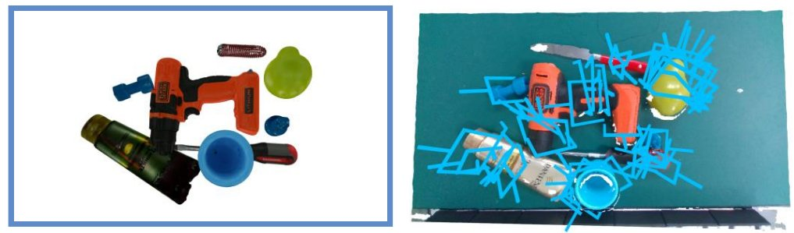
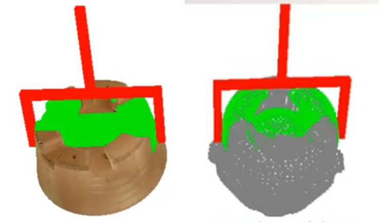
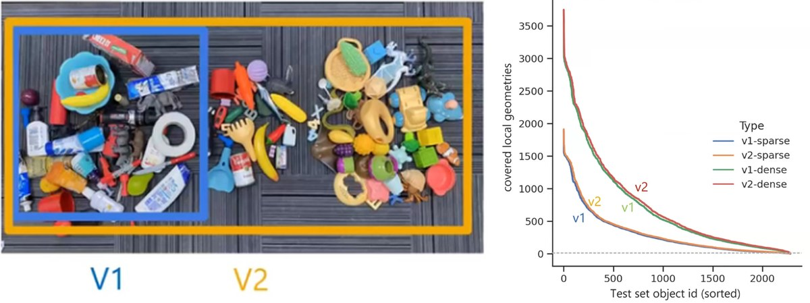
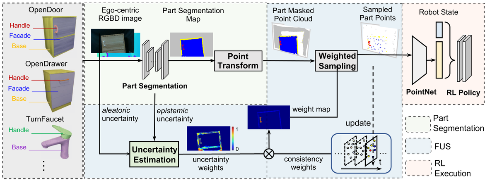
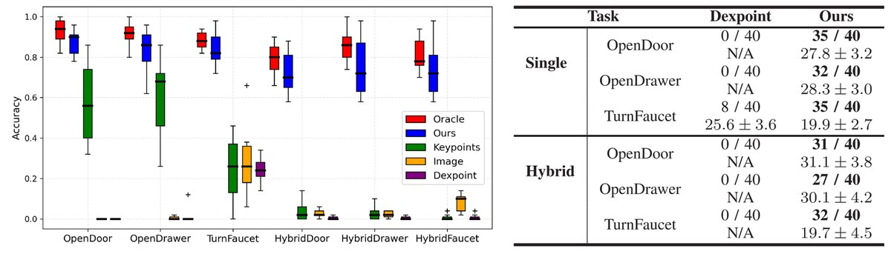
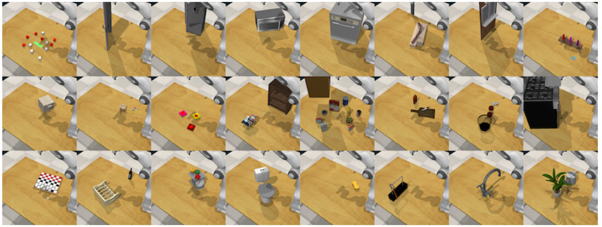
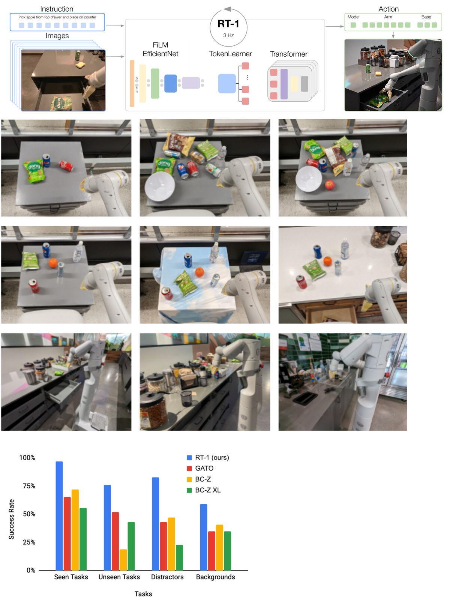
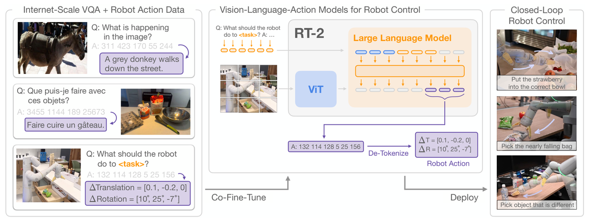

机器人操作技能简述
本文为大家简单梳理机器人操作（Robot Manipulation）领域的研究进展，从通用物体抓取、基于概念的部件操作、到端到端通用机器人的探索，介绍当前机器人如何获取通用操作技能的不同技术路线。
1 引言
具身智能（Embodied AI）的核心目标是赋予智能体物理身体，使其能够在真实世界中感知和行动。与互联网AI（如SAM、CLIP、LLMs等）主要完成识别任务不同，具身智能要求智能体具备身体控制能力，直接与物理世界进行交互。
设想这样一个场景：当用户说"我把可乐洒在了桌子上，帮我把它扔掉并拿点东西来清理"，家用机器人需要完成以下步骤：
- 规划：如何将这个复杂任务分解为可执行的子任务？ — LLM已经做得很好
- 导航：如何移动到目标物体附近？ — SLAM技术也已成熟
- 操作：如何拿起和放下物体？ — 核心挑战所在
获取通用操作技能（General Manipulation Skills）是具身智能的核心难点，面临以下挑战：
- 复杂的物理交互规律
- 物体形状和材质的多样性
- 高精度的控制要求
2 通用物体抓取：AnyGrasp
2.1 问题定义：场景级抓取
GraspNet-1Billion: A Large-Scale Benchmark for General Object Grasping, Fang et al., CVPR 2020
场景级抓取（Scene-level Grasping）的任务定义为：给定一张RGBD图像作为输入，为场景中每个可抓取点输出可行的6DoF抓取姿态。


左：场景级抓取任务定义（输入RGBD图像，输出密集6DoF抓取姿态）；右：6DoF抓取姿态示意（方向向量V、转角R、夹子宽度M和抓取距离D）
以往工作的核心假设是：更多的物体种类（1000+）比更密集的姿态标注更重要。然而，GraspNet 的作者提出了一个关键观察：抓取成功与否很大程度上取决于被抓取处的局部几何形状，而非物体整体外形。因此，与其在大量物体上标注稀疏姿态，不如在少量物体上标注极密集的抓取姿态。
2.2 数据收集：少物体、密姿态

GraspNet数据集：144个物体上标注超过1B个密集抓取姿态
GraspNet 针对144个具备高质量3D mesh的物体，采集了超过10亿（1B+）的密集抓取姿态数据。具体而言：对3D模型表面采样点后，在每个点的球面上采样方向向量V，再对每个方向采样R、M和D，最后通过力学分析判断该姿态是否可靠。实验验证了这个假设是正确的：更少的物体标注更密集的姿态，可以学到与更多物体相当的局部几何特征。
2.3 抓取任何物体：93%+成功率
AnyGrasp: Robust and Efficient Grasp Perception in Spatial and Temporal Domains, Fang et al., T-RO 2023
基于GraspNet的数据和方法，AnyGrasp进一步在模型设计和时序抓取上进行了拓展，最终实现了93%以上的通用物体抓取成功率，超越此前最优方法21%以上。从demo来看，它能够：
- 抓取300+种未见过的物体
- 完成动态场景下的鱼类抓取
- 实现桌面级的通用抓取
然而，并非所有物体都可以用任意可行姿态来抓取。例如，拿起水杯需要握住杯身而非杯口，拿起热水壶需要握住把手而非壶身。这就引出了下一个问题：如何理解物体部件的功能性，进行更安全、更合理的操作？
3 基于概念的部件操作
3.1 动机：理解物体的可操作部件
Part-Guided 3D RL for Sim2Real Articulated Object Manipulation, RAL 2023
在日常生活中，很多物体不是简单地"抓起来"就行的，而是需要操作特定的部件。例如：开门需要按下把手、开抽屉需要拉住拉手、拧水龙头需要转动阀门。人类天然理解这些"可操作部件"（affordance），但机器人需要通过学习来获取这种概念。
3.2 分割引导的操作方法

Part-Guided 3D RL 完整流程：部件分割 → 点云变换 → 加权采样 → RL策略
Part-Guided 3D RL 的核心思路是将语义部件分割与强化学习相结合：
- 部件分割：从第一人称RGBD图像中分割出可操作部件（如把手、底座等）
- 点云变换：将分割结果转换为3D点云表示
- 加权采样：根据不确定性估计进行加权采样，获取关键部件点
- RL策略：基于PointNet编码的部件点云，通过强化学习训练操作策略
3.3 跨类别泛化能力

仿真环境（左）和真实世界（右）的跨类别操作实验结果
训练集仅使用每个类别5个样本，测试集使用每个类别40个未见样本。实验结果表明，基于部件分割的方法能够在有限数据下学会跨类别的操作策略，并且能够成功从仿真迁移到真实世界（Sim-to-Real）。
3.4 日常生活中的多样操作任务

RLBench：涵盖浇花、摆桌、插形状、堆叠物体等丰富的日常操作任务
现实生活中的操作任务远不止抓取和部件操作，还包括浇花、摆放餐具、插入物体、堆叠积木等。RLBench提供了一个包含100+任务的基准，展示了通用操作技能的广度和复杂性。
4 端到端通用机器人：RT系列
4.1 RT-1：直接映射图像到控制信号
RT-1: Robotics Transformer for Real-World Control at Scale, Google Robotics, 2023

RT-1 的数据收集：13万+机器人数据，覆盖700+任务，历时17个月
RT-1 是 Google Robotics 在端到端机器人控制上的突破性工作。其核心思路是：通过大规模数据收集，训练一个 Transformer 模型直接从图像输入映射到机器人控制信号。
- 数据规模：130K+ 机器人轨迹数据，覆盖 700+ 任务
- 数据收集时间：17个月的遥操作数据采集
- 核心突破：首次实现端到端的感知-控制系统在真实场景中大规模部署
4.2 RT-2：视觉-语言-动作大模型
RT-2: Vision-Language-Action Models Transfer Web Knowledge to Robotic Control, Google DeepMind, 2023

RT-2 框架：互联网VQA数据 + 机器人数据联合微调，输出离散化的机器人动作
RT-2 在 RT-1 的基础上引入了互联网规模的视觉语言数据，核心创新是将机器人动作离散化为文本token，从而可以用VLM的统一框架同时学习视觉理解和机器人控制：
- 数据：约1B互联网图文对 + 130K机器人轨迹数据混合训练
- 模型：基于ViT + LLM的多模态大模型，输出末端控制器的位移和旋转
- 优势：通过互联网数据的世界知识，提升了对新物体和新指令的泛化能力
4.3 存在的问题与挑战
尽管RT系列看起来前景光明，但存在显著的问题：
- 不安全：机械臂动作颤抖，存在安全隐患
- 速度慢：推理延迟导致执行速度比人类慢8倍
- 幻觉问题：继承了LLM的幻觉问题，可能产生不合理的动作
- 泛化有限：换一个环境就难以达到数据收集场景的效果
4.4 RT-X与Open X-Embodiment
Open X-Embodiment: Robotic Learning Datasets and RT-X Models, Open X-Embodiment Collaboration, 2023
Open X-Embodiment：试图通过多机器人平台的数据共享来解决数据瓶颈
RT-X 系列面临的核心未解决问题：
- 如何大规模扩展机器人数据？ 遥操作成本高昂，130K数据已耗时17个月
- 如何从互联网数据直接学习动作技能？ VQA数据中缺乏物理交互信息
- 如何适应新型机器人平台？ 在一个平台上训练的模型难以迁移到其他机器人
5 总结与讨论
本文介绍了机器人操作技能的三条主要技术路线：
- 通用物体抓取（AnyGrasp）：通过密集姿态标注和局部几何学习，实现93%+的通用抓取成功率
- 基于概念的部件操作：通过部件分割引导强化学习，实现对功能性部件的理解和操作
- 端到端通用机器人（RT系列）：通过大规模数据和多模态大模型，尝试实现从感知到控制的端到端学习
讨论：
- 如何与世界交互并持续学习？ 当前的模型都是离线训练后部署，缺乏在线学习和持续适应的能力。
- 什么类型的机器人更合适？ 人形机器人、夹爪、灵巧手、柔性机械臂各有优劣，针对不同场景可能需要不同的本体设计。
- 是否真的需要端到端方案？ 从GraspNet vs RT-2的对比来看，视觉-机器人解耦的方案在精度和泛化性上可能更优，端到端方案的道路仍然漫长。
- 如何实现跨本体迁移（X-Embodiment）？ 不同机器人的动作空间和物理特性差异巨大，如何让一个算法适用于多种机器人仍是开放问题。
参考文献
[1] Fang et al. GraspNet-1Billion: A Large-Scale Benchmark for General Object Grasping. CVPR 2020.
[2] Fang et al. AnyGrasp: Robust and Efficient Grasp Perception in Spatial and Temporal Domains. T-RO 2023.
[3] Geng et al. Part-Guided 3D RL for Sim2Real Articulated Object Manipulation. RAL 2023.
[4] James et al. RLBench: The Robot Learning Benchmark & Learning Environment. RAL 2020.
[5] Brohan et al. RT-1: Robotics Transformer for Real-World Control at Scale. 2023.
[6] Brohan et al. RT-2: Vision-Language-Action Models Transfer Web Knowledge to Robotic Control. 2023.
[7] Open X-Embodiment Collaboration. Open X-Embodiment: Robotic Learning Datasets and RT-X Models. 2023.
[8] Ahn et al. Do As I Can, Not As I Say: Grounding Language in Robotic Affordances. CoRL 2022.
Based on a presentation given on 2023-12-05.
本文阅读量： 次